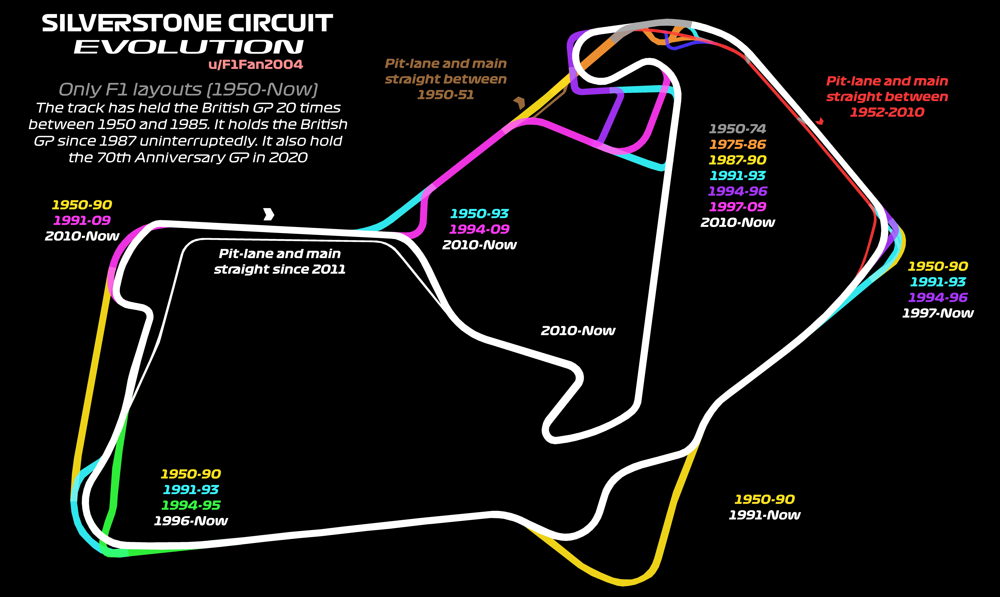

Circuito Silverstone
Silverstone, Reino Unido
Inicio > Circuitos > Circuitos Permanentes > Circuito Silverstone
Silverstone, Reino Unido

Construido sobre un antiguo aeródromo de la Segunda Guerra Mundial, es considerado la cuna de la Fórmula 1. Es uno de los trazados más rápidos y exigentes aerodinámicamente del calendario, famoso por sus curvas enlazadas de altísima velocidad como Copse, Maggotts, Becketts y Stowe, donde los pilotos soportan enormes fuerzas G y el clima británico suele añadir un factor impredecible.